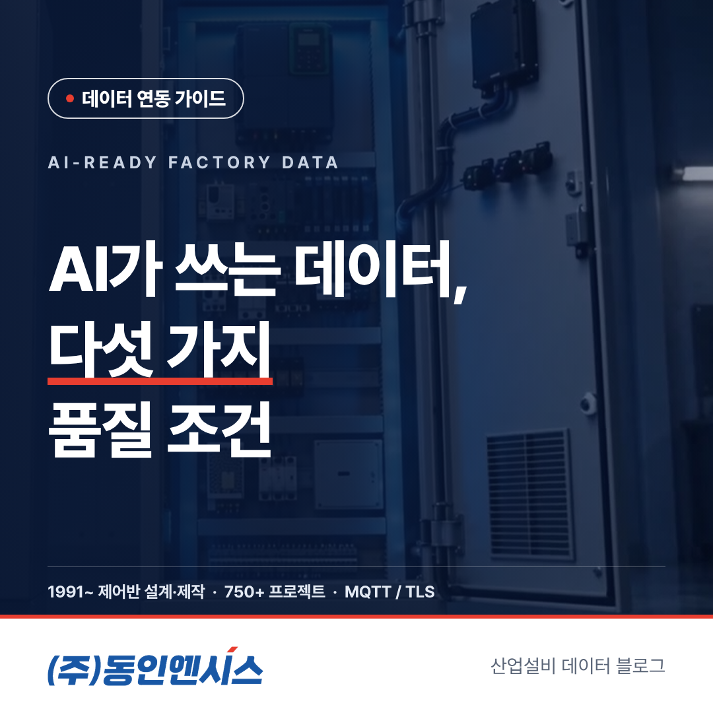
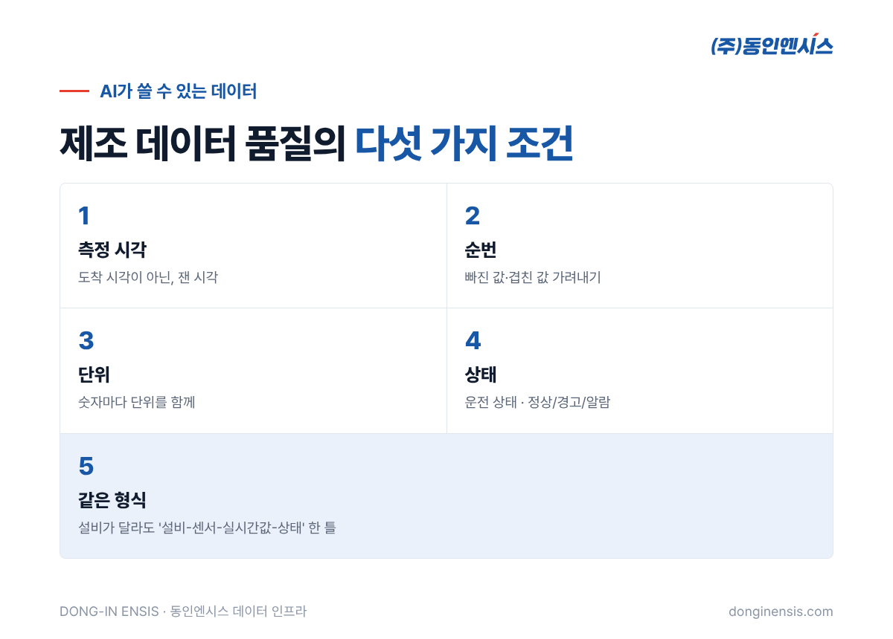
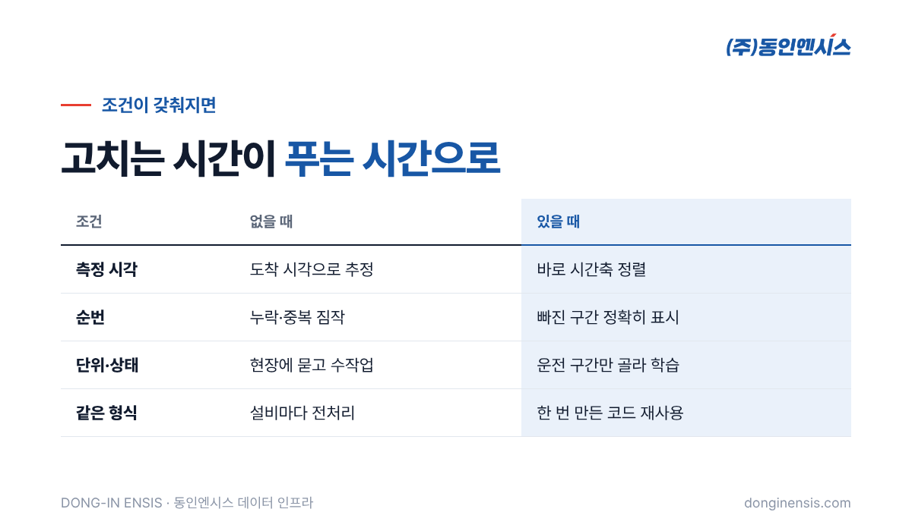

제조 AI 프로젝트에서 가장 많은 시간이 드는 일은 모델을 만드는 일이 아니라고들 합니다. 데이터를 받아 보고, 고치고, 다시 받는 데 시간이 다 간다는 것입니다. 시각이 맞지 않고, 단위가 섞여 있고, 설비마다 형식이 다르면 AI는 출발선에도 서지 못합니다. 제어반을 직접 설계·제작하며 그 제어반에서 설비 데이터를 만들어 내보내는 동인엔시스가, AI 팀이 바로 쓸 수 있는 제조 데이터 품질의 다섯 가지 조건을 정리했습니다. 데이터를 받는 쪽이 아니라 '처음 만드는 쪽'에서 무엇을 지켜야 하는지에 초점을 맞췄습니다.
데이터 품질 문제는 대개 받는 쪽에서 발견되지만, 원인은 만드는 쪽에 있습니다. 센서에서 나온 값이 PLC를 거치고, 게이트웨이를 거치고, 서버에 도착하는 동안 시각이 바뀌고 단위가 사라지고 이름이 달라집니다. 받는 쪽에서 아무리 정리해도 사라진 정보는 되살릴 수 없습니다.
그래서 동인엔시스는 데이터가 처음 만들어지는 제어반에서부터 형식을 정해 내보냅니다. 1991년부터 부산에서 제어반을 만들어 온 회사가 데이터 인프라까지 맡게 된 이유도 여기에 있습니다. 설비 신호가 모두 모이는 곳이 제어반이니, 그곳에서 품질을 잡는 것이 가장 확실합니다.

아래 다섯 가지는 하나만 빠져도 AI 팀의 일이 몇 배로 늘어나는 항목들입니다. 거꾸로 말하면, 이 다섯 가지만 처음부터 지켜져도 제조 데이터 품질 문제의 대부분은 미리 막을 수 있습니다.
AI가 설비의 변화를 배우려면 값의 순서와 간격이 정확해야 합니다. 그런데 현장 데이터에는 '측정한 시각'과 '서버에 도착한 시각'이 섞이는 일이 흔합니다. 통신이 잠시 느려졌다가 몰려 들어온 값에 도착 시각이 찍히면, 실제로는 고르게 변한 온도가 계단처럼 보이게 됩니다.
동인엔시스 데이터는 값마다 제어반에서 측정한 시각을 붙여 보냅니다. 서버에 언제 도착했는지와 상관없이, 그 값이 실제로 언제의 상태인지를 알 수 있습니다. 여러 설비의 값을 같은 시간축에 놓고 비교할 때, 그리고 원인과 결과의 순서를 따져야 할 때 이 차이가 큽니다.
공장 네트워크가 끊기는 일은 피할 수 없습니다. 문제는 끊긴 동안의 값이 사라지거나, 다시 보내는 과정에서 같은 값이 두 번 들어오는 경우입니다. AI 입장에서는 빈 구간도 문제지만, 같은 값이 두 번 들어와 특정 구간이 실제보다 길어 보이는 것도 학습을 흐립니다.
지능형 제어반은 통신이 끊기면 값을 보관했다가 연결이 살아나면 오래된 순서대로 다시 보냅니다. 그리고 값마다 순번을 붙여, 받는 쪽에서 어느 값이 빠졌고 어느 값이 겹쳤는지 확인할 수 있게 합니다. '데이터가 없다'와 '그 시간에 정말 아무 일도 없었다'를 구분할 수 있다는 뜻입니다.
"41.2"라는 숫자만으로는 섭씨인지, 화씨인지, 전류인지 알 수 없습니다. 현장마다 단위와 소수점 처리가 다르면, 같은 종류의 설비라도 AI에게는 전혀 다른 데이터가 됩니다. 단위가 빠진 데이터를 맞추느라 현장 담당자에게 일일이 묻는 일은 프로젝트를 몇 주씩 늦추기도 합니다.
동인엔시스 데이터는 센서마다 값과 단위를 함께 담습니다. 받는 쪽에서 레지스터 번호표나 별도 문서를 찾아 숫자를 해석할 필요가 없습니다.
같은 전류값이라도 설비가 막 기동하던 순간인지, 안정적으로 돌던 중인지, 멈추는 중이었는지에 따라 의미가 완전히 달라집니다. 설비가 멈춰 있던 시간의 값을 정상 운전 데이터와 섞어 학습하면, AI는 '평소 모습'을 잘못 배우게 됩니다.
그래서 값만이 아니라 맥락이 함께 있어야 합니다. 지능형 제어반은 운전 상태신호를 함께 수집하고, 센서마다 기준값에 따른 정상·경고·알람 상태를 값과 같이 남깁니다. AI 팀은 운전 중인 구간만 골라 학습하거나, 경고가 떴던 구간을 따로 살펴볼 수 있습니다.
Photorealistic photo of three Korean professionals in a modern meeting room, two in casual business clothes and one in a factory work vest, looking at a large screen showing abstract multi-line time series charts and a colored status band (no readable text), laptops on the table, natural daylight, documentary style, no brand logos, no readable text. 3:2 landscape.
펌프와 송풍기, 압축기는 생김새도 제조사도 다르지만, AI 팀이 받는 데이터의 모양까지 다를 필요는 없습니다. 현장마다, 설비마다 형식이 다르면 새 설비가 하나 늘 때마다 데이터 전처리 코드를 새로 짜야 합니다.
동인엔시스는 모든 데이터를 '설비-센서-실시간값-상태'라는 같은 틀로 정리합니다. 어느 공장인지(site_id), 어느 설비인지(equipment_id)를 먼저 밝히고, 그 아래로 센서마다 같은 칸에 같은 순서로 정보를 채우는 방식입니다. MQTT 토픽 구조와 태그 규칙은 버전을 붙여 관리하기 때문에, 형식이 바뀌더라도 언제 어떻게 바뀌었는지 추적할 수 있습니다. 세부 규칙 문서는 기술 미팅에서 NDA를 맺은 뒤 제공합니다.

이 다섯 가지가 처음부터 지켜진 데이터는 AI 팀의 일을 크게 줄입니다.
| 조건 | 없을 때 AI 팀이 하는 일 | 있을 때 |
|---|---|---|
| 측정 시각 | 도착 시각으로 추정·보정 | 바로 시간축 정렬 |
| 순번 | 누락·중복을 짐작으로 처리 | 빠진 구간을 정확히 표시 |
| 단위 | 현장에 묻고 문서 찾기 | 그대로 사용 |
| 상태 | 정지 구간을 수작업으로 걸러냄 | 운전 구간만 골라 학습 |
| 같은 형식 | 설비마다 전처리 코드 | 한 번 만든 코드를 재사용 |
동인엔시스가 실증 중인 비지도 학습 이상탐지도 이런 데이터를 바탕으로 합니다. 정상 운전의 평소 모습을 배우려면, 그 평소가 정확하게 기록되어 있어야 하기 때문입니다. AI 이상탐지는 아직 실증을 거쳐 다듬고 있는 단계입니다.
Photorealistic close-up photo inside an open light-grey industrial control cabinet: a compact PLC with I/O modules, an industrial ethernet switch with blinking green port LEDs, neatly labeled wires without readable text, cable ducts, soft even lighting, no brand logos, no readable text. 3:2 landscape.
Q. 기존 설비 데이터도 이 형식으로 받을 수 있나요? 기존 PLC에서 데이터를 읽어 오는 경우에도, 플랫폼으로 넘길 때는 같은 형식으로 정리하는 것을 원칙으로 합니다. 읽어 올 수 있는 값의 범위는 현장 분석에서 확인합니다.
Q. 제조 데이터 품질을 미리 확인해 볼 수 있나요? 샘플 데이터나 CSV 파일로 구조와 품질을 먼저 살펴본 뒤, 시연 장비로 연동을 검증하는 순서를 권합니다.
Q. 데이터는 어떤 방식으로 받나요? REST API로 목록·최신값·기간 이력을, WebSocket으로 실시간 값을 받고, 필요하면 CSV로 내려받을 수 있습니다.
AI의 성능은 모델보다 데이터에서 먼저 갈립니다. 언제, 어디서, 어떤 단위로, 어떤 상태에서 잰 값인지가 처음부터 분명하면 AI 팀은 데이터를 고치는 대신 문제를 푸는 데 시간을 쓸 수 있습니다. 동인엔시스는 제어반에서 그 첫 기록을 바르게 남기는 일을 맡습니다.
협업 문의 051-862-3668 · dongin@donginmne.com
아래 질문 중 하나에 실제 경험으로 답해 본문 적당한 곳에 넣어 주세요. 사람이 직접 쓴 문장이 들어가면 네이버에서 저품질 위험이 줄고 노출에 도움이 됩니다.